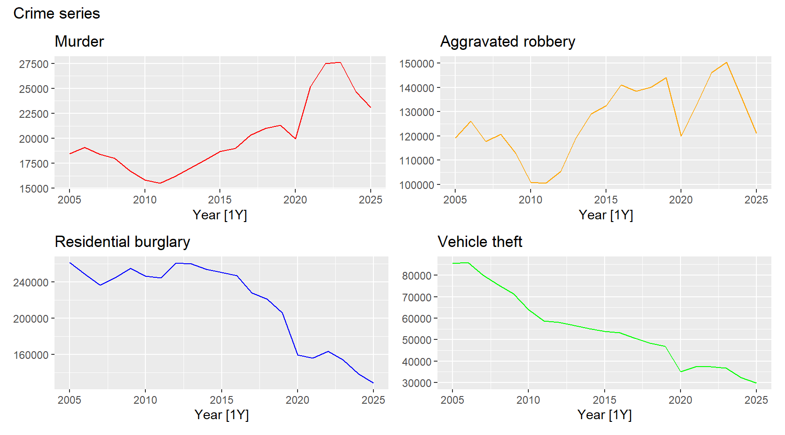
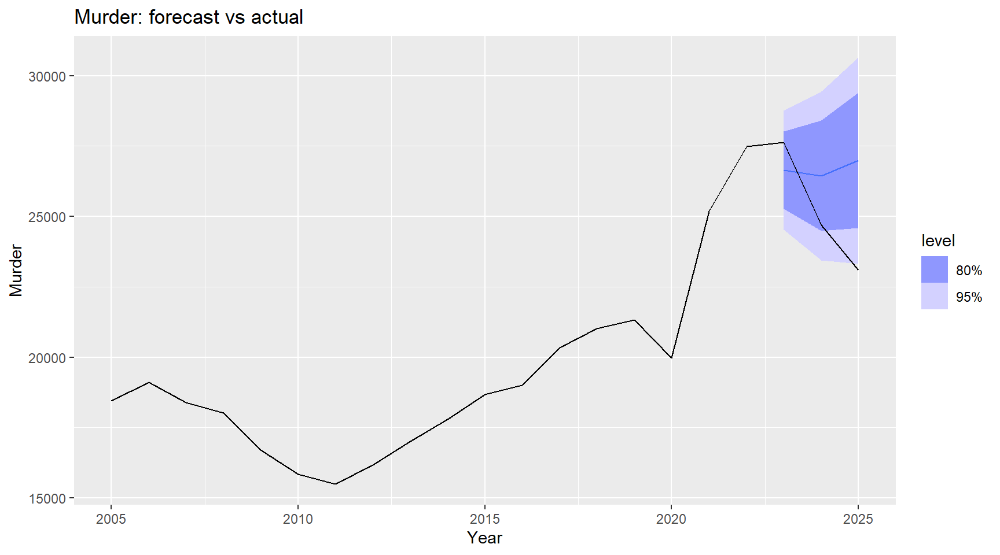
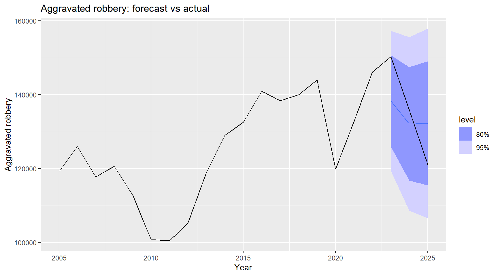
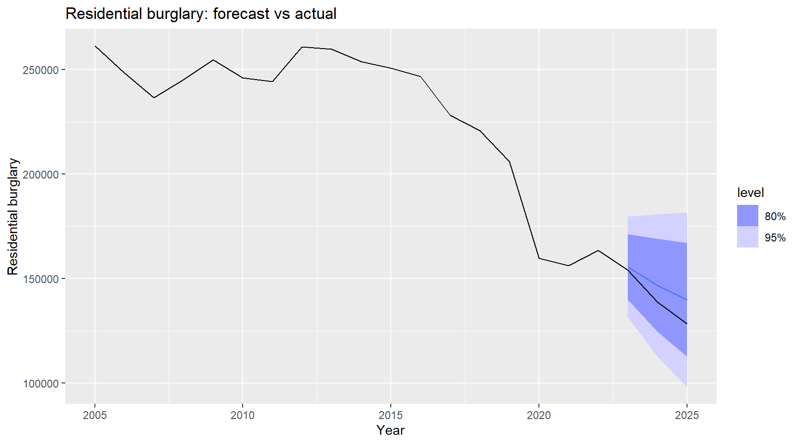
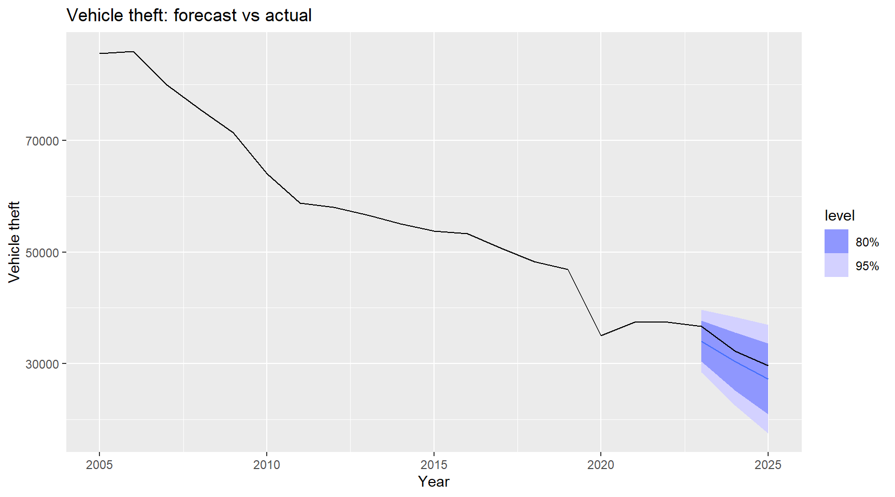

Forecasting Crime in South Africa: An ARIMA and ARIMAX Analysis of Macroeconomic Indicators, 2005–2025
Author
Natalie Chidikwindi
Introduction
Crime and socioeconomic inequality are important concerns in South Africa. Research on crime often examines factors associated with criminal activity, but understanding how recorded crime changes over time is also important for identifying trends and producing forecasts.
This project uses time series methods to examine four categories of recorded crime in South Africa: murder, aggravated robbery, residential burglary, and vehicle theft. ARIMA models describe and forecast each crime series using its own historical behaviour, while ARIMAX models incorporate GDP, inflation, and unemployment as explanatory variables.
The project addresses two main questions:
How have recorded crime counts changed over time in South Africa?
Do macroeconomic indicators help explain and forecast changes in recorded crime counts?
The analysis focuses on recorded cases rather than population-adjusted crime rates. It examines associations between aggregate variables and does not establish that these variables cause crime or explain an individual’s likelihood of committing an offence.
Data and Preparation
Data Sources and Variables
The response variables are the annual numbers of cases recorded by the South African Police Service (SAPS) for four crime categories:
Murder.
Aggravated robbery.
Residential burglary.
Vehicle theft.
These figures represent recorded offences rather than all crimes committed. Changes in the series may therefore reflect changes in criminal activity, reporting behaviour, or recording practices.
The explanatory variables are GDP, inflation, and the unemployment rate. The datasets are aggregated and joined using a common year identifier. The intended study period is 2005–2025, giving 21 annual observations where all years are available across the datasets.
The crime data are supplied as aggregated counts, and no individual-level personal information is used in this analysis.
Loading Packages
The following packages are used to import and clean the data, construct time series objects, estimate models, and present the results.
Importing GDP and Unemployment Data
GDP and unemployment observations are grouped by calendar year. The mean of the available observations within each year is used to construct each annual series.
Click to expand code
# importing and aggregating gdp data to annual because there is only annual datagdp_dat <-read_csv("real gdp.csv")gdp_annual <- gdp_dat |>mutate(Year =year(observation_date)) |>group_by(Year) |>summarise(GDP =mean(NGDPRNSAXDCZAQ, na.rm =TRUE))# importing unemployment data and aggregating to year unemp_dat<-read_csv("unemployment rate.csv")unemp_annual <- unemp_dat|>mutate(Year =year(observation_date)) |>group_by(Year) |>summarise(Unemployment =mean(LRUN64TTZAQ156S, na.rm =TRUE))
The GDP series definition and units should be confirmed from its source metadata before interpreting it as real GDP. In particular, real GDP, nominal GDP, and GDP growth are different measures and should not be used interchangeably.
Importing Crime Data
The crime dataset records reporting periods using labels such as 2005/2006. The first year of each reporting period is used as its year identifier. Thus, the label 2005 represents the reporting period 2005/2006 rather than the calendar year 2005.
The selected crime categories are summed across the records within each reporting period.
Click to expand code
# importing crime data and aggregating annuallycrime_dat <-read_csv("sapacr-2005-2026-v1.5.csv")crime_cols <-c("murder", "aggr_robbery", "burglary_res", "vehicle_theft")crime_annual <- crime_dat |>mutate(Year =as.integer(substr(year, 1, 4))) |># the data has dates as e.g. 2005/2006 and therefore it is chosen to be 2005group_by(Year) |>summarise(across(all_of(crime_cols), ~sum(.x, na.rm =TRUE)))
This aggregation assumes that the source rows represent non-overlapping units. Any national or provincial totals included alongside their component records would need to be excluded to avoid double counting.
Preparing the Inflation Series
The CPI data require additional preparation because they are stored in two Excel files with overlapping dates. Each file is reshaped into a monthly series containing a date and an index value.
The overlapping observations are then used to calculate a scaling factor so that the two index series can be joined on a common numerical basis. This adjustment assumes that the selected series are conceptually comparable; rescaling alone cannot resolve differences in their coverage or definition.
Click to expand code
# importing cpi datasetread_cpi_index <-function(path, code, headline_only =FALSE) { r <-read_excel(path) |>filter(H03 == code)if (headline_only) r <- r |>filter(H04 =="CPI Headline") # for the new filestopifnot(nrow(r) ==1) r |>select(starts_with("MO")) |>pivot_longer(everything(), names_to ="col", values_to ="index") |>mutate(date =make_date(as.integer(substr(col, 5, 8)), as.integer(substr(col, 3, 4)), 1),index =as.numeric(index) ) |>filter(!is.na(index)) |>select(date, index)}old <-read_cpi_index("cpi-2000-2008-v1.xlsx", "VPN00000")new <-read_cpi_index("cpi-2008-2026-v1.1.xlsx", "CPS00000", headline_only =TRUE)# joining both cpi datasets into 1 overlap <-inner_join(old, new, by ="date", suffix =c("_old", "_new"))nrow(overlap) # 4 rows overlapping
[1] 2
Click to expand code
scale <-mean(overlap$index_old / overlap$index_new)cpi_idx <-bind_rows(old, new |>filter(!date %in% old$date) |>mutate(index = index * scale)) |>arrange(date)range(cpi_idx$date)
The monthly inflation rates are averaged over April–March financial years. Only financial years with 12 available monthly inflation observations are retained.
Click to expand code
# ensuring cpi is matched properlycpi_m <- cpi_idx |>mutate(infl =100* (index / index[match(date %m-%months(12), date)] -1)) |>filter(!is.na(infl))# funtion to help mutate date datato_fy <-function(d) if_else(month(d) >=4, year(d), year(d) -1L)# aggregating to annualcpi_annual <- cpi_m |>mutate(Year =to_fy(date)) |>group_by(Year) |>filter(n() ==12) |>summarise(CPI =mean(infl))
Although the variable is named CPI in the code, it contains the average year-on-year inflation rate, expressed as a percentage, rather than the CPI index level.
Combining and Checking the Data
The crime counts and macroeconomic variables are joined using their year identifiers. Inner joins retain only the years that are present in every dataset.
Click to expand code
# combine into 1 dataset and convert to a tsibble object (time series)crime_data <- crime_annual |>inner_join(gdp_annual, by ="Year") |>inner_join(unemp_annual, by ="Year") |>inner_join(cpi_annual, by ="Year") |>as_tsibble(index = Year)# missing values checkedsum(is.na(crime_data))
[1] 0
Click to expand code
# checksrange(crime_data$Year)
[1] 2005 2025
Click to expand code
nrow(crime_data)
[1] 21
The combined dataset contains 21 annual observations, covering year labels from 2005 to 2025. There are 0 missing values in the retained dataset.
No imputation is applied. However, the absence of missing values after joining does not establish that every source dataset was complete: inner joins can remove unmatched years, and the aggregation functions omit missing source values when calculating totals or averages.
There is also a timing limitation. Crime and inflation are organised by reporting or financial year, while GDP and unemployment are averaged by calendar year. Matching the same year labels therefore does not align the underlying periods exactly. These periods should ideally be harmonised before interpreting the ARIMAX coefficients or evaluating predictive relationships.
Exploratory Data Analysis
The exploratory analysis examines changes in recorded crime counts and macroeconomic indicators over time. These plots help identify trends and unusual movements that may be relevant when specifying the ARIMA and ARIMAX models.
Recorded Crime Counts
Click to expand code
crimes <-c("murder", "aggr_robbery", "burglary_res", "vehicle_theft")regs <-c("GDP", "CPI", "Unemployment")# time series plots # function for plottingc1 <- crime_data |>autoplot(murder, colour ="red") +labs(title ="Murder", y =NULL)c2 <- crime_data |>autoplot(aggr_robbery, colour ="orange") +labs(title ="Aggravated robbery", y =NULL)c3 <- crime_data |>autoplot(burglary_res, colour ="blue") +labs(title ="Residential burglary", y =NULL)c4 <- crime_data |>autoplot(vehicle_theft, colour ="green") +labs(title ="Vehicle theft", y =NULL)(c1 | c2) / (c3 | c4) +plot_annotation(title ="Crime series")

The murder series shows an upward movement over much of the later study period, interrupted by a decline around 2020 during the COVID-19 pandemic. Recorded cases subsequently rise and appear to peak around the reporting periods labelled 2022–2023 before declining towards the end of the series.
Aggravated robbery follows a less consistent pattern. Recorded cases decline around 2010–2012 before increasing again. A further dip is visible around 2020, followed by a recovery and a more recent decline after approximately 2022–2023.
Residential burglary and vehicle theft both display broadly declining trends over the study period. Both also show a decrease around the pandemic period, although the longer-term downward movement extends beyond this disruption.
The movements around 2020 coincide with the COVID-19 pandemic and associated restrictions. These restrictions may have affected opportunities for particular offences, mobility, and reporting behaviour. However, the plots alone cannot establish the reasons for the observed changes.
The differences between the four series suggest that each crime category may require a different time series specification. A model suitable for a declining property-crime series may not adequately describe the changing pattern of recorded murder cases.
Macroeconomic Indicators
The explanatory variables are plotted below to examine their long-term movements and any disruptions that may be relevant to the crime series.
The GDP series shows a broad upward movement, with disruptions around the 2008–2009 global financial crisis and the COVID-19 pandemic in 2020. These events provide economic context for changes in the series. However, the interpretation of its upward trend depends on whether the source measures nominal or real GDP, which should be confirmed before drawing conclusions about growth in economic activity.
Inflation fluctuates rather than following a sustained upward trend. The series shows a pronounced increase around 2008 and further movements during the pandemic and subsequent recovery period. More recent observations appear to indicate easing inflation. These changes describe movements in the rate of price increases rather than changes in the CPI index level itself.
The unemployment rate displays a broad upward trend over much of the study period, with particularly high levels around the pandemic and its aftermath. A modest decline is visible in the later observations, although unemployment remains elevated relative to earlier years.
These patterns motivate examining whether macroeconomic indicators add useful information to forecasts based on past crime counts alone. Nevertheless, visual co-movement does not establish a statistical relationship or causation. Trends, possible structural changes, and the short sample of annual observations must be considered when specifying and interpreting the models.
Autocorrelation and Partial Autocorrelation
The autocorrelation function (ACF) measures the relationship between a series and its past values. The partial autocorrelation function (PACF) measures the relationship at each lag after accounting for the intervening lags.
These plots provide an initial assessment of persistence in the recorded crime series. However, model orders should not be selected from these plots alone before assessing stationarity.
The ACF plots show positive autocorrelation that gradually declines as the lag increases. Significant spikes extend approximately to lag three for residential burglary and vehicle theft, and to lag two for murder and aggravated robbery. Lag one has the strongest autocorrelation in each series.
In the PACF plots, the main significant spike occurs at lag one across all four crime categories. These patterns indicate persistence, but they may also reflect non-stationarity. Stationarity is therefore assessed before using the correlation patterns to identify candidate ARIMA models.
Preliminary Cross-Correlation Analysis
The cross-correlation function (CCF) measures the association between two series at different lags. It is used here to explore potential relationships between recorded crime counts and the macroeconomic indicators.
The variable named CPI contains the inflation rate calculated from CPI rather than the CPI index level.
The preliminary plots suggest associations between murder and both GDP and unemployment. For aggravated robbery, all three macroeconomic indicators display potentially relevant correlations, including an isolated significant correlation with inflation.
GDP and unemployment appear to be potential explanatory variables for residential burglary. For vehicle theft, all three indicators display potentially relevant correlations.
These findings are preliminary. Correlations between non-stationary series can arise from shared trends rather than a meaningful relationship. Serial dependence within each series can also affect the CCF. The relationships are therefore reassessed after examining stationarity and applying the required transformations.
These full-sample plots are descriptive. Predictor and model selection for forecast evaluation will rely on on the training sample to avoid using information from the test period.
Data Pre-processing and Stationarity
Training and Test Sets
The dataset is divided chronologically into a training sample and a test sample. The training sample contains 18 annual observations from 2005 to 2022, while the test sample contains three observations from 2023 to 2025. This corresponds to approximately 86% of the observations for training and 14% for testing.
The training data are used to assess stationarity, identify candidate models, and estimate their parameters. The test data are reserved for evaluating forecasts.
Click to expand code
# splitting into training and testn_test <-3train_data <- crime_data |>filter(Year <=max(Year) - n_test)test_data <- crime_data |>filter(Year >max(Year) - n_test)# no of obsnrow(train_data)
[1] 18
Click to expand code
nrow(test_data)
[1] 3
Click to expand code
# year rangerange(train_data$Year)
[1] 2005 2022
Click to expand code
range(test_data$Year)
[1] 2023 2025
he year labels retain the definitions used during data preparation. In particular, the crime observations represent reporting periods identified by their starting year.
Stationarity Assessment
Stationarity is assessed using the KPSS test and the recommended number of differences returned by unitroot_ndiffs().
For the KPSS test, the hypotheses are:
(H_0): The series is stationary under the test specification.
(H_1): The series is not stationary under the test specification.
A small KPSS p-value provides evidence against stationarity. This interpretation differs from unit-root tests whose null hypothesis is the presence of a unit root.
Click to expand code
# test for differencing and whether te time series plots are stationary # response variablestrain_data |>features(murder, list(unitroot_kpss, unitroot_ndiffs))
The reported KPSS results give small p-values for murder, residential burglary, and vehicle theft, providing evidence against stationarity. The differencing procedure recommends one difference for each of these series.
For aggravated robbery, the results do not indicate that differencing is required.
Among the explanatory variables, GDP and unemployment also require one difference. Inflation does not require differencing under the procedure used.
These findings guide the initial transformations, although stationarity tests have limited power in a training sample of only 18 annual observations.
First Differencing
First differencing is applied to the series identified above:
\[
\Delta y_t = y_t-y_{t-1}.
\]
For crime counts, this transformation measures the annual change in recorded cases. For unemployment, it measures the change in the unemployment rate in percentage points. The GDP difference measures an absolute change in the source units rather than a percentage growth rate.
Click to expand code
# difference the series that required differencingtrain_diff <- train_data |>mutate(d_murder =difference(murder),d_burglary_res =difference(burglary_res),d_vehicle_theft =difference(vehicle_theft),d_GDP =difference(GDP),d_Unemployment =difference(Unemployment) ) |>filter(!is.na(d_murder)) # drops the first year as it is NA# checks for stationarity of the difference onestrain_diff |>features(d_murder, list(unitroot_kpss, unitroot_ndiffs))
After first differencing, the reported results recommend no further differencing, and the KPSS tests no longer reject stationarity at the chosen significance level.
These results support proceeding with the transformed series, although failure to reject the stationarity null does not prove stationarity.
ACF and PACF After Transformation
The ACF and PACF are examined again using the differenced series where required. Aggravated robbery remains in levels because the stationarity assessment did not recommend differencing.
For differenced murder and residential burglary, neither the ACF nor the PACF shows a clear significant pattern. This suggests ARIMA(0,1,0) as a useful initial candidate for each original series.
For aggravated robbery, the ACF and PACF both show a prominent spike at lag one. This motivates considering low-order AR, MA, and combined ARMA specifications. A gradual decline in the ACF alone does not establish an MA(1) model; the cutoff and decay patterns in both plots must be considered together.
For differenced vehicle theft, neither plot shows a clear significant pattern. ARIMA(0,1,0) is therefore a natural initial candidate, while ARIMA(0,1,1) can be evaluated as an alternative.
The proposed baseline candidates are:
Crime category
Initial model candidates
Murder
ARIMA(0,1,0)
Aggravated robbery
ARIMA(1,0,0), ARIMA(0,0,1), and ARIMA(1,0,1)
Residential burglary
ARIMA(0,1,0)
Vehicle theft
ARIMA(0,1,0) and ARIMA(0,1,1)
These are candidate specifications rather than confirmed final models. Information criteria, residual diagnostics, and forecast performance are needed to assess their suitability. Intercept or drift terms must also be considered when fitting the models.
Cross-Correlation After Transformation
The CCF is reassessed using the training data after the required transformations. These plots examine relationships between changes in the non-stationary series and the variables retained in levels.
The differenced variables are used here for exploratory analysis. Their use in the final ARIMAX specification must be considered separately from the differencing applied to the model’s errors.
A negative correlation with the change in GDP at plotted lag −1 and a positive correlation at lag zero.
A negative correlation with inflation at plotted lag −2.
A positive correlation with the change in unemployment at lag zero.
For aggravated robbery, the main reported correlations are negative associations with inflation at plotted lags −2, −3, and −4. The earlier apparent associations with GDP and unemployment are less evident after transformation.
The lag labels are reported as displayed rather than interpreted automatically as predictor delays. Their direction depends on the CCF convention and the order of the variables supplied to the function. This must be checked before constructing lagged predictors.
For residential burglary, the reported plots show positive correlations with inflation and the change in GDP at lag zero. A negative correlation with the change in unemployment appears at plotted lag one.
For vehicle theft, a positive correlation with the change in GDP appears at lag zero, while a negative correlation with the change in unemployment appears at plotted lag one. Inflation does not show a clear significant relationship after transformation.
These findings identify possible relationships for further investigation, but they do not establish causation or guarantee that the variables will improve forecasts. Differencing also does not remove all serial dependence; prewhitening could provide a more reliable assessment of cross-correlations.
Given the small sample and the number of correlations examined, isolated significant spikes should be interpreted cautiously. Parsimonious ARIMAX specifications are therefore preferred. Any contemporaneous or future explanatory values required for forecasting must also be available at the forecast origin or supplied through forecasts or explicit scenarios.
Model Fitting: ARIMA and ARIMAX
Candidate models are fitted using the training sample. Baseline ARIMA models describe each crime series using its own historical behaviour, while ARIMAX models incorporate selected macroeconomic variables.
The explanatory variables and their candidate lags are informed by the exploratory analysis. Different combinations are evaluated to determine whether they improve model fit relative to the baseline specifications.
Because the data are annual, no within-year seasonal component is included. The models are therefore described as ARIMA and ARIMAX rather than SARIMA and SARIMAX.
In the ARIMAX specifications, the ARIMA orders describe the error process after accounting for the explanatory variables:
The variable named CPI represents inflation calculated from CPI. Its lagged values therefore represent past inflation rates rather than past CPI index levels.
The lagged relationships identified through the CCF are treated as exploratory candidates rather than established predictive relationships.
In-Sample Model Comparison
The candidate models are compared using AIC, corrected AIC (AICc), and BIC. These criteria balance model fit against complexity, with lower values indicating a more favourable balance.
AICc is used as the main ranking criterion because the training sample is small. Nevertheless, models with several explanatory variables require particular caution when only 18 annual observations are available.
In the reported results, the preferred in-sample specifications are:
Crime category
Selected model
Explanatory variables
Murder
ARIMAX with ARIMA(0,1,0) errors
GDP, GDP lagged one year, inflation lagged two years, and unemployment
Aggravated robbery
ARIMAX with ARIMA(1,0,0) errors
Inflation lagged two years
Residential burglary
ARIMAX with ARIMA(0,1,0) errors
GDP
Vehicle theft
ARIMAX with ARIMA(0,1,0) errors
GDP
These selections describe the most favourable in-sample results among the candidate models. They do not necessarily identify the models with the best forecasting performance.
Lagged predictors create unavailable values at the beginning of the training sample. Information criteria should therefore be interpreted only after checking that the models are estimated over comparable observations and that any missing-value warnings have been resolved. If different effective samples are used, the models should be refitted over a common period before their information criteria are compared.
Selected Model Estimates
The coefficient estimates and their standard errors are examined for the selected models.
chosen models
Click to expand code
# coeffecients for each modelmurder_models |>select(full) |>report()
For the selected murder model, contemporaneous GDP is the only explanatory term identified as statistically significant in the reported results. The additional lagged and contemporaneous variables contribute to the selected specification but are not individually significant at the chosen threshold.
For aggravated robbery, the first-order autoregressive coefficient is statistically significant. This indicates persistence in the model’s error process after accounting for lagged inflation. The reported results do not establish that the inflation coefficient itself is significant.
GDP is also statistically significant in the selected residential burglary and vehicle theft models.
These findings describe conditional associations within the fitted models. They do not establish causal effects, and the small sample means that coefficient estimates and significance assessments should be interpreted cautiously. Statistical significance also does not guarantee improved forecast accuracy.
Residual Diagnostics
Residual diagnostics are used to assess whether the selected models leave systematic serial dependence unexplained. The analysis examines residual time plots, residual distributions, and residual ACF plots.
The Ljung–Box test provides a joint assessment of residual autocorrelation across the first five lags. Its hypotheses are:
(H_0): Residual autocorrelations at lags one through five are zero.
(H_1): At least one of these autocorrelations is non-zero.
The test assesses serial correlation rather than stationarity.
The residual ACF plots show no significant spikes for the selected models. The reported Ljung–Box p-values are also above the chosen significance level, so the null hypothesis of no residual autocorrelation is not rejected.
Together, these findings suggest that the models adequately capture the serial dependence detectable in the training sample. However, a large p-value does not give the probability that the null hypothesis is true, and it does not prove that the residuals are independent or stationary.
Because the sample is small, the tests may have limited ability to detect remaining dependence. The diagnostics therefore support proceeding to forecast evaluation without establishing that the models are fully adequate in every respect.
Out-of-Sample Forecasting
Forecast Design
Forecasts are generated for the three held-out observations covering the year labels 2023–2025. All candidate models are evaluated, allowing their forecasting performance to be compared with their in-sample rankings.
The explanatory-variable values supplied in test_data are the realised values from the test period. The ARIMAX forecasts are therefore conditional on these observed macroeconomic outcomes.
This is a conditional forecast evaluation rather than a fully prospective forecasting exercise. In practical forecasting, unavailable explanatory variables would need to be forecast separately or supplied through explicit scenarios.
The prediction intervals describe uncertainty under the fitted model and supplied explanatory-variable paths. They do not incorporate uncertainty from separately forecasting those explanatory variables.
Forecasts from the In-Sample Selected Models
The following plots compare the forecasts from the selected models with the observed crime counts.
Click to expand code
# forecast overlayed on full model# murdermurder_fc |>filter(.model =="full") |>autoplot(crime_data) +labs(title ="Murder: forecast vs actual", y ="Murder")

Click to expand code
#robberyrobbery_fc |>filter(.model =="cpi_100") |>autoplot(crime_data) +labs(title ="Aggravated robbery: forecast vs actual", y ="Aggravated robbery")

Click to expand code
# burglaryburglary_fc |>filter(.model =="gdp") |>autoplot(crime_data) +labs(title ="Residential burglary: forecast vs actual", y ="Residential burglary")

Click to expand code
# vehicle theftvehicle_fc |>filter(.model =="gdp_010") |>autoplot(crime_data) +labs(title ="Vehicle theft: forecast vs actual", y ="Vehicle theft")

Murder
The selected murder model predicts a decline, whereas the observed series rises over part of the forecast period. The point forecasts therefore do not capture the observed direction of movement. However, the observations remain within the displayed prediction intervals, indicating substantial uncertainty around the forecast path.
Aggravated Robbery
The selected aggravated robbery model does not closely reproduce the observed path. Nevertheless, the observations fall within the displayed prediction intervals. This distinction highlights that interval coverage and point forecast accuracy assess different aspects of forecast performance.
Residential Burglary
The residential burglary model captures the direction of the observed decline, and its point forecasts are comparatively close to the recorded values. The observations also lie within the displayed prediction intervals.
Vehicle Theft
The vehicle theft model also predicts a decline, consistent with the overall direction of the observed series. However, it overestimates the magnitude of the decline, producing forecasts that fall more sharply than the observed counts.
The prediction intervals appear narrower for residential burglary and vehicle theft than for murder and aggravated robbery. Because the crime series have different levels and plotting scales, this visual comparison should not be treated as a formal comparison of relative uncertainty.
Final Forecast Performance Comparison
Forecast accuracy is evaluated using root mean squared error (RMSE), mean absolute error (MAE), mean absolute percentage error (MAPE), and mean absolute scaled error (MASE).
RMSE and MAE measure errors in recorded-case units. MAPE expresses errors relative to the observed counts, while MASE scales errors against an in-sample naïve benchmark. Lower values indicate better performance under each measure.
The tables are ranked by MAPE, although the other measures are considered alongside it.
For aggravated robbery and vehicle theft, the models preferred by the in-sample comparison do not produce the best out-of-sample forecasts. Baseline models without macroeconomic regressors perform better over the held-out period under the reported accuracy ranking.
This suggests that adding explanatory variables does not automatically improve forecasting performance. Additional predictors may improve training-sample fit while introducing estimation uncertainty, particularly when the available sample is small.
Model comparisons are most direct within each crime category. Raw RMSE and MAE values should not be used alone to rank forecasting difficulty across crime categories because the counts differ in scale. MAPE and MASE provide additional context, although neither removes every difference between the series.
The test sample contains only three annual observations, so the rankings are sensitive to individual forecast errors. These results provide an initial assessment rather than strong evidence of long-run forecasting superiority.
Overall, the analysis shows why model selection should consider both in-sample fit and held-out forecast performance. The macroeconomic variables offer potentially useful explanatory information, but their predictive value differs across crime categories and is not consistently greater than that of simpler ARIMA models.
References
International Monetary Fund. (2026). Real Gross Domestic Product (GDP) for South Africa [NGDPRSAXDCZAQ][real gdp.csv]. FRED, Federal Reserve Bank of St. Louis. https://fred.stlouisfed.org/series/NGDPRSAXDCZAQ.
Organisation for Economic Co-operation and Development. (2026). Infra-Annual Labor Statistics: Unemployment Rate Total: From 15 to 64 Years for South Africa [LRUN64TTZAQ156S] [unemployment rate.csv]. FRED, Federal Reserve Bank of St. Louis. https://fred.stlouisfed.org/series/LRUN64TTZAQ156S.
South African Police Service. (2026). South African Police Service Annual Crime Records 2005–2026 (Version 1.5)[sapacr-2005-2026-v1.5.csv]. DataFirst. https://doi.org/10.25828/5MAW-4H90.
Statistics South Africa. (2026). Consumer Price Index 1970–2026 (Version 1.1)[cpi-2008-2026-v1.1.xlsx]. DataFirst. https://doi.org/10.25828/5ZYE-Y989.